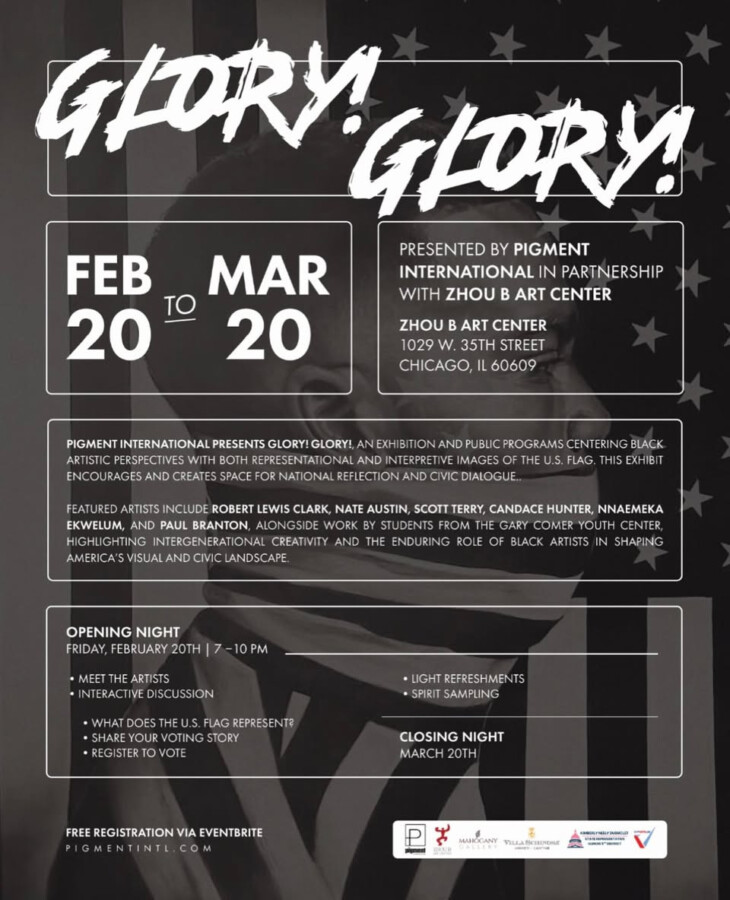

Glory! Glory!
Overview
An exhibition that encourages, and creates space for civic dialogue
Glory! Glory! 🎉
Pigment International presents Glory! Glory!, an exhibition and public programs centering Black artistic perspectives with both representational and interpretive images of the U.S. flag. This exhibit encourages and creates space for, reflection and civic dialogue.
Featured artists include Robert Lewis Clark, Nate Austin, Candace Hunter, Nnaemeka Ekwelum, and Paul Branton, alongside work by students from the Gary Comer Youth Center, highlighting intergenerational creativity and the enduring role of Black artists in shaping America’s visual and civic landscape.